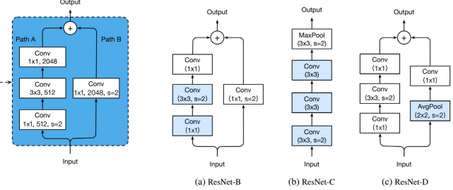
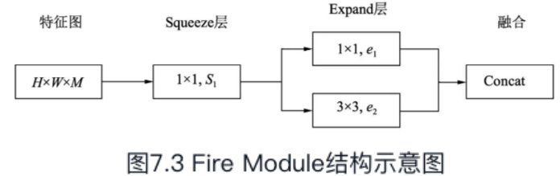
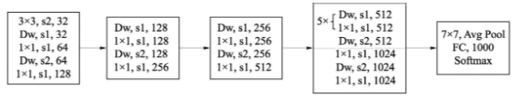
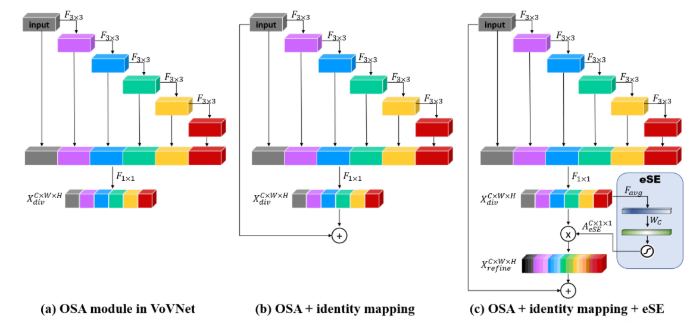
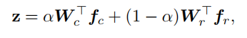

图像识别论文解读
VGG¶
- VGGNet有一个显著的特点：每次经过池化层（maxpool）后特征图的尺寸减小一倍，而通道数则增加一倍（最后一个池化层除外）
- VGGNet中，使用的卷积核基本都是
3×3，而且很多地方出现了多个3×3堆叠的现象，这种结构的优点在于，首先从感受野来看，两个3×3的卷积核与一个5×5的卷积核是一样的；其次，同等感受野时，3×3卷积核的参数量更少。更为重要的是，两个3×3卷积核的非线性能力要比5×5卷积核强，因为其拥有两个激活函数，可大大提高卷积网络的学习能力。
Inception¶
 |
- 为进一步降低网络参数量，Inception又增加了多个
1×1的卷积模块,这种1×1的模块可以先将特征图降维，再送给3×3和5×5大小的卷积核，由于通道数的降低，参数量也有了较大的减少。 - 最后的Inception模块处使用了全局平均池化。为了避免深层网络训练时带来的梯度消失问题.
- Inception v2进一步通过卷积分解与正则化实现更高效的计算，增加了BN层，同时利用两个级联的3×3卷积取代了Inception v1版本中的5×5卷积。
- 更进一步，Inception v2将
n×n的卷积运算分解为1×n与n×1两个卷积
ResNet¶
- 背景:当时的已经证明网络深度越深效果越好，但实验发现网络越深越难收敛，出现网络退化现象(56层的网络比20层网络效果还要差)，何凯明提出了残差网络。
- 普通神经网络只需要关注输出F(x)，残差网络需要关注H(x)=F(x)+x -> F(x)=H(x) - x，而且残差更小学习难度小点。
resnet的改进
- 改进一：改进downsample部分，减少信息流失。前面说过了，每个stage的第一个conv都有下采样的步骤，我们看左边第一张图左侧的通路，input数据进入后在会经历一个stride=2的1*1卷积，将特征图尺寸减小为原先的一半，请注意1x1卷积和stride=2会导致输入特征图¾的信息不被利用，因此ResNet-B的改进就是就是将下采样移到后面的3x3卷积里面去做，避免了信息的大量流失。ResNet-D则是在ResNet-B的基础上将identity部分的下采样交给avgpool去做，避免出现1x1卷积和stride同时出现造成信息流失。ResNet-C则是另一种思路，将ResNet输入部分的7x7大卷积核换成3个3x3卷积核，可以有效减小计算量，这种做法最早出现在Inception-v2中。其实这个ResNet-C 我比较疑惑，ResNet论文里说它借鉴了VGG的思想，使用大量的小卷积核，既然这样那为什么第一部分依旧要放一个7x7的大卷积核呢，不知道是出于怎样的考虑，但是现在的多数网络都把这部分改成3个3x3卷积核级联。

- 改进二：ResNet V2。这是由ResNet原班人马打造的，主要是对ResNet部分组件的顺序进行了调整。各种魔改中常见的预激活ResNet就是出自这里。
模型轻量化设计
从模型设计时就采用一些轻量化的思想，例如采用深度可分离卷积、分组卷积等轻量卷积方式，减少卷积过程的计算量。此外，利用全局池化来取代全连接层，利用1×1卷积实现特征的通道降维，也可以降低模型的计算量，这两点在众多网络中已经得到了应用。
SqueezeNet¶

- SqueezeNet层：首先使用
1×1卷积进行降维，特征图的尺寸不变，这里的S1小于M，达到了压缩的目的。 - Expand层：并行地使用
1×1卷积与3×3卷积获得不同感受野的特征图，有点类似Inception模块，达到扩展的目的。 - Concat：对得到的两个特征图进行**通道拼接**，作为最终输出。
- 模块中的S1、e1与e2都是可调的超参，Fire Module默认e1=e2=4×S1。激活函数使用了ReLU函数。
- SqueezeNet一共使用了3个Pool层，前两个是Max Pooling层，步长为2，最后一个为**全局平均池化**，利用该层可以取代全连接层，减少了计算量。
- 全局平均池化:我们对每个特征图一整张图片进行全局均值池化，这样每张特征图都可以得到一个输出。这样采用均值池化，连参数都省了，可以大大减小网络参数，避免过拟合.
- SqueezeNet虽在一定程度上减少了卷积计算量，但仍然使用传统的卷积计算方式
MobileNet¶
MobileNet利用了更为高效的深度可分离卷积的方式，进一步加速了卷积网络在移动端的应用
普通卷积
- 假设有一个
3×3大小的卷积层，其输入通道为16、输出通道为32，一共需要(3×3×16)×32 =4068个参数。
深度可分离卷积
- 深度可分离卷积=深度卷积+逐点卷积(
1x1) - 用16个
3×3大小的卷积核（1通道）分别与输入的16通道的数据做卷积（这里使用了16个1通道的卷积核，输入数据的每个通道用1个3×3的卷积核卷积），得到了16个通道的特征图，我们说该步操作是depthwise（逐层）的，在叠加16个特征图之前接着用32个1×1大小的卷积核（16通道）在这16个特征图进行卷积运算，将16个通道的信息进行融合（用1×1的卷积进行不同通道间的信息融合），我们说该步操作是pointwise（逐像素）的。这样我们可以算出整个过程使用了3×3×16+（1×1×16）×32 =656个参数。 - 总体计算量约等于标准卷积的1/9，极大地减少了卷积过程的计算量。
深度可分离卷积模块结构图

- 在此使用了ReLU6来替代原始的ReLU激活函数，将ReLU的最大输出限制在6以下
- 使用ReLU6的原因主要是为了满足移动端部署的需求。移动端通常使用Float16或者Int8等较低精度的模型，如果不对激活函数的输出进行限制的话，激活值的分布范围会很大，而低精度的模型很难精确地覆盖如此大范围的输出，这样会带来精度的损失。
MobileNetv1结构

- 与VGGNet类似，也是一个逐层堆叠式网络
- Dw代表一个深度分解卷积，其后需要跟一个
1×1卷积，s2代表步长为2的卷积，可以缩小特征图尺寸，起到与Pooling层一样的作用。网络最后利用一个全局平均池化层，送入到全连接与Softmax进行分类预测。 - MobileNet v1还设置了两个超参数，用来控制模型的大小与计算量
- 宽度乘子：用于控制特征图的通道数，记做α，当α＜1时，模型会变得更薄，可以将计算量减少为原来的α2。
- 分辨率乘子：用于控制特征图的尺寸，记做ρ，在相应的特征图上应用该乘子，也可以有效降低每一层的计算量。
- 缺点
- 模型结构较为复古，采用了与VGGNet类似的卷积简单堆叠，没有采用残差、特征融合等先进的结构。
- 深度分解卷积中各通道相互独立，卷积核维度较小，输出特征中只有较少的输入特征，再加上ReLU激活函数，使得输出很容易变为0，难以恢复正常训练，因此在训练时部分卷积核容易被训练废掉。
MobileNetv2
- 利用残差结构取代了原始的卷积堆叠方式，提出了一个Inverted Residual Block结构
- 传统的残差网络通常先使用1×1卷积进行特征降维，减少通道数，再送入
3×3卷积，最后再利用1×1卷积升维，类似沙漏。 -
MobileNet v2中，由于使用了深度可分离卷积来逐通道计算，本身计算量就比较少，因此在此可以使用1×1卷积来升维，在计算量增加不大的基础上获取更好的效果，最后再用1×1卷积降维，类似柳叶。
-
去掉Block的ReLu6层
-
深度可分离卷积得到的特征对应于低维空间，特征较少，如果后续接线性映射则能够保留大部分特征，而如果接非线性映射如ReLU，则会破坏特征，造成特征的损耗，从而使得模型效果变差，针对此问题，MobileNet v2直接去掉了每一个Block中最后的ReLU6层(不是所有)，减少了特征的损耗，获得了更好的检测效果。
MobileNetv3
MobileNetv3有两个large和small，small的精度和MobileNetv2相似
整体来说MobileNetV3有两大创新点
互补搜索技术组合：由资源受限的NAS执行模块级搜索(使用了神经网络搜索功能来**构建全局的网络结构**)，NetAdapt执行局部搜索(对每层的核数量进行优化)。
网络结构改进：将最后一步的**平均池化层**前移并移除最后一个卷积层，引入
h-swish激活函数。
- 在mobilenetv2中，在avg pooling之前，存在一个1x1的卷积层，目的是提高特征图的维度，更有利于结构的预测，但是这其实带来了一定的计算量了，所以这里作者修改了，将其放在avg pooling的后面，首先利用avg pooling将特征图大小由7x7降到了1x1，降到1x1后，然后再利用1x1提高维度，这样就减少了7x7=49倍的计算量。并且为了进一步的降低计算量，作者直接去掉了前面纺锤型卷积的3x3以及1x1卷积，进一步减少了计算量，就变成了如下图第二行所示的结构，作者将其中的3x3以及1x1去掉后，精度并没有得到损失。这里降低了大约15ms的速度。
MobileNetV3是综合了以下三种模型的思想：
MobileNetV1的深度可分离卷积MobileNetV2的具有线性瓶颈的逆残差结构MnasNet的基于squeeze and excitation结构的轻量级注意力模型。
ShuffleNet¶
当前先进的卷积网络通常在3×3卷积之前增加一个1×1卷积，用于通道间的信息流通与降维。然而在ResNeXt、MobileNet等高性能的网络中，1×1卷积却占用了大量的计算资源，ShuffleNet v1从优化网络结构的角度出发，利用**组卷积**与**通道混洗**（Channel Shuffle）的操作有效降低了1×1逐点卷积的计算量，是一个极为高效的轻量化网络。
分组卷积
通道混洗
- a图代表了常规的两个组卷积操作，可以看到，如果没有逐点的1×1卷积或者通道混洗，最终输出的特征仅由一部分输入通道的特征计算得出，这种操作阻碍了信息的流通，进而降低了特征的表达能力。
- b图我们希望在一个组卷积之后，能够将特征图之间的通道信息进行融合，将每一个组的特征分散到不同的组之后，再进行下一个组卷积，这样输出的特征就能够包含每一个组的特征，而通道混洗恰好可以实现这个过程，如图c所示。
ShuffleNetv1
- a图是一个带有深度可分离卷积的普通残差模块，这里的
1×1是逐点的卷积。相比深度可分离卷积，1×1计算量较大。 - b图则是基本的ShuffleNet基本单元，可以看到
1×1卷积采用的是**组卷积**，然后进行通道的混洗，这两步可以取代1×1的逐点卷积，并且大大降低了计算量。3×3卷积仍然采用深度可分离的方式。 - c图是带有降采样的ShuffleNet单元，在旁路中使用了步长为2的3×3平均池化进行降采样，在主路中3×3卷积步长为2实现降采样。另外，由于降采样时通常要伴有通道数的增加，ShuffleNet直接将两分支拼接在一起来实现了通道数的增加，而不是常规的逐点相加。
- g代表组卷积的组数，以控制卷积连接的稀疏性。组数越多，计算量越少，因此在相同的计算资源，可以使用更多的卷积核以获取更多的通道数。
- 可以看到开始使用的普通的3x3的卷积和max pool层（深度可分离卷积虽然可以有效降低计算量，但其存储访问效率较差，因此第一个卷积并没有使用ShuffleNet基本单元）。
- 然后是三个阶段，每个阶段都是重复堆积了几个ShuffleNet的基本单元。这3个阶段的第一个Block的步长为2以完成降采样，下一个阶段的通道数是上一个的两倍。
ShuffleNet_v2
- 提出了一种新的Channel Split操作，如图7.13c所示，将输入特征分成两部分，一部分进行真正的深度可分离计算，将计算结果与另一部分进行通道Concat，最后进行通道的混洗操作，完成信息的互通。
- 整个过程没有使用到
1×1组卷积，也避免了逐点相加的操作。 - 在需要降采样与通道翻倍时，ShuffleNet v2去掉了Channel Split操作，这样最后Concat时通道数会翻倍
GhostNet:[ɡoʊst]¶
优点
- Ghost Module是一个即插即用模块，可以无缝衔接现有的CNN中
- 采用Ghost Module设计的Ghost Net，在ILSVRC-2012上top1超过Mobilenet-V3，并且参数更少
论文提出观点
- 特征图冗余
- Ghost卷积
- Φ线性变换是什么？Φ线性变换其实也就是
3x3卷积，卷积本身其实就是一种线性组合的运算，只不过在我们增加了激活函数之后赋予了其非线性
class GhostModule(nn.Module):
def __init__(self, inp, oup, kernel_size=1, ratio=2, dw_size=3, stride=1, relu=True):
super(GhostModule, self).__init__()
self.oup = oup
init_channels = math.ceil(oup / ratio)
new_channels = init_channels*(ratio-1)
# 这个是②过程，就是普通的卷积，输出通道为N/2
self.primary_conv = nn.Sequential(
nn.Conv2d(inp, init_channels, kernel_size, stride, kernel_size//2, bias=False),
nn.BatchNorm2d(init_channels),
nn.ReLU(inplace=True) if relu else nn.Sequential(),
)
# 线性变换
self.cheap_operation = nn.Sequential(
# 3x3卷积可以理解
nn.Conv2d(init_channels, new_channels, dw_size, 1, dw_size//2, groups=init_channels, bias=False),
nn.BatchNorm2d(new_channels),
# 用relu参数来控制是否进行线性变换
nn.ReLU(inplace=True) if relu else nn.Sequential(),
)
def forward(self, x):
x1 = self.primary_conv(x)
x2 = self.cheap_operation(x1)
out = torch.cat([x1,x2], dim=1) # 根据通道进行拼接
return out[:,:self.oup,:,:]
- Ghost模块
- Ghost Bottlenecks ，结构与ResNet的是类似的，并且与mobilenet-v2一样在第二个module之后不采用ReLU激活函数。
- 左边是stride=1的Ghost Bottlenecks，右边是stride=2的Ghost Bottlenecks，目的是为了缩减特征图大小。
VoVNet¶
DenseNet的参数量和计算量相对于ResNet少，但是速度却慢，主要是:
- DenseNet中密集连接所导致的**高内存访问成本**(由于需要进行多次Concatnate操作，数据需要被复制多次，显存容易增加得很快)，附:根据shuffleNet V2论文中内存的计算方式，输入通道和输出通道相同时MAC才最优。
- 由于输入channel数较大，DenseNet采用了1x1卷积层先压缩特征，这个额外层的引入对GPU高效计算不利。
VoVNet从内存访问成本（Memory Access Cost，MAC）和GPU计算效率上来考虑，可以看成DenseNet的变体，在目标检测模型上性能优于DensNet。
-
DenseNet的一大问题就是密集连接太重了，而且每个layer都会聚合前面层的特征，其实造成的是特征冗余，VoVNet论文中通过研究DensNet模型weights的**L1范数**发现中间层对最后的分类层贡献较少(我的理解:后面的层已经学习到了中间层的核心信息)，这些信息冗余就可以被优化。所以VoVNet提出
OSA模块 -
OSA模块:就是只在最后一次性聚合前面所有的layer，改动较小解决问题较大。
- 每个layer的输入channel数是固定的，这里可以让输出channel数和输入一致而取得最小的MAC
-
而且也不再需要1x1卷积层来压缩特征，所以OSA模块是GPU计算高效的。
-
VoVNet由OSA模块构成，主要有三种不同的配置，详情见论文。
VoVNetV2¶
论文|Code|分割网络:Real-Time Anchor-Free Instance Segmentation
VoVNetV2在VoVNet的基础上，引入了ResNet的残差连接和SENet的SE模块

- b:直接将输入加到输出上，增加短路连接，使得VoVNet可以训练更深的网络，论文中是VoVNet-99。
- c:在最后的特征层上加上了sSE模块来进一步增强特征，原始的SE模块包含两个FC层，其中中间的FC层主要是为降维，这在一定程度上会造成信息丢失。而sSE模块是去掉了这个中间FC层。
- VoVNetV2相比VoVNet增加了少许的计算量，但是模型性能有提升
PeleeNet¶
DenseNet变体，被用于**解决存储和计算能力受限的情况。**PeleeNet只有MobileNet模型的66%,并且比MobileNet精度更高，常被用于SSD的backbone
网络结构：核心设计原则也和DenseNet相仿
- Two-Way Dense Layer：
- Stem Block:
ResNet和DenseNet在第一层都是用的是一个7x7、stride为2的卷积层，浅层网络的作用是提取图像的边缘、纹理等信息。Stem Block的设计就是**打算以比较小的代价取代7x7的卷积**。该结构可以有效的提升特征表达能力且不会增加额外的计算开销，比其他的方法（增加通道或增加增长率）都要好。
- 整个网络由一个
Stem Block和四阶特征提取器组成(Dense Layer+1x1 conv+avgpol)
- 为什么是4阶？
- 四阶段一般为大模型的通用设计结构，ShuffleNet使用了三阶段，并在每个阶段的开始都压缩了特征图大小，尽管这样可以提升计算速度，但是本文认为**前面的阶段对视觉任务尤为重要，且过早的减小特征图大小会损坏特征表达能力**，因此**仍然使用四阶段结构**，前两阶段的层数是专门控制在一个可接受的范围内的。
BBN(解决长尾数据)¶
为什么对于样本不均衡数据模型结果更倾向于数量多的类？SGD优化器的原因:均衡数据，学到的是全局最优或近似，但长尾数据SGD使得模型优化的是倾向于数量多的类的局部最优的(因为带动量的SGD的momentum会根据训练累加历史梯度)
baseline训练长尾数据测试时精度长很差：长尾数据分布不均匀，测试数据常常均匀分布的，也就是训练数据分布和测试数据分布不一样，所以结果就较差了。
- 常用解决长尾效应的方法：类别重平衡策略(如权重重赋值，重采样等)，虽然可以达到令人满意的效果，但会在一定程度上破坏网络学习某些特征表示的能力。
- 这些方法通过在一个batch中进行样本重采样；权重重赋值。
- 过采样:重复样本量少的数据类别。欠采样：减少样本量多的类别数据。副作用：增加尾部数据可能会导致网络对尾部类别的过拟合，而丢弃宝贵的数据必然会削弱深度网络的泛化能力。
- 权重重赋值:在损失函数中为尾部类的训练样本分配较大的权重，但不适合处理大规模的真实世界的长尾数据，并且容易造成优化困难。
- BBN策略：提出了一个统一的**双边分支网络**，一边保证特征表示能力，另一边保证分类能力。同时引入**累计学习策略**:首先学习通用的特征表示，然后逐渐将注意力放在尾部数据（样本量较少的数据）上。
网络模型
- 假设
X为训练样本，y为对应的标签。对于双边分支，分别应用均匀采样和反向采样得到两组样本(X_c,y_c)和(X_r,y_r)，然后经过各自分支的特征提取和全局平均池化得到相应的特征向量f_c,f_r。然后通过**特定的累积学习策略**，可以在训练阶段将网络学习的“注意力”转移到两个分支之间：通过自适应平衡参数α控制分支的特征向量αf_c,(1-α)f_r被送到对应分支的分类器W_c、W_r中，然后通过元素相加进行融合，送到softmax后进行预测。

- 损失函数，对交叉熵损失函数(
E)进行使用α控制加权
均匀采样：是指在一个epoch中，训练集中的每一个样本都只会以相同的概率被采样一次，概率1/N。
反向采样：每个类别的采样概率与样本容量的倒数成正比，也就是说某个类别的样本容量越大，被采样的可能性就越小。
累计学习策略
- α通过适配器根据训练的迭代次数自动生成，促使整个BBN结构**首先从原始的分布中学习通用特征，然后逐渐将注意力集中到尾部数据及样本量较少的数据类别中去。**
-
更重要的是，α可以控制每一个分支的参数更新，可以避免在训练末期，过度强调尾部数据而损害了通用的特征表示。
-
推理阶段两个分支同样重要，设置自适应参数
α的值为0.5。